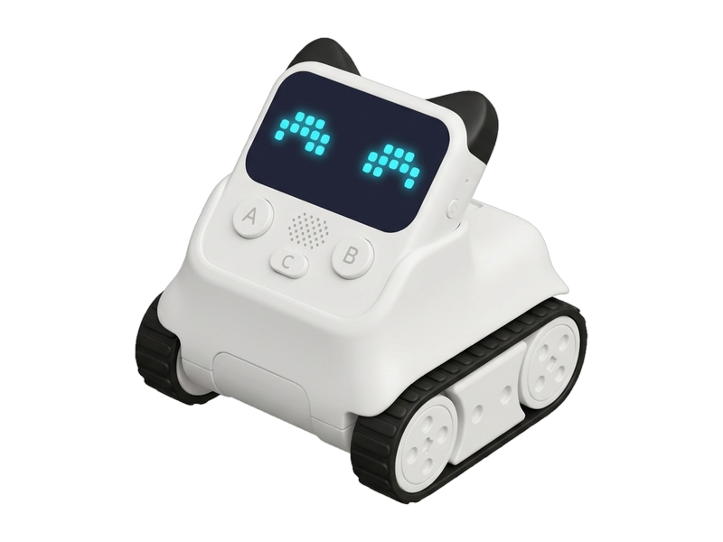
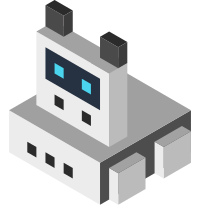
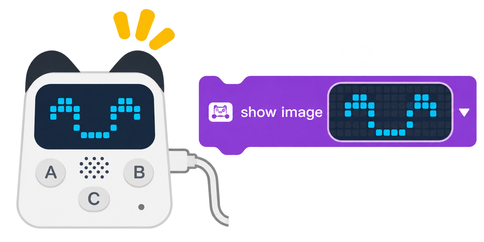
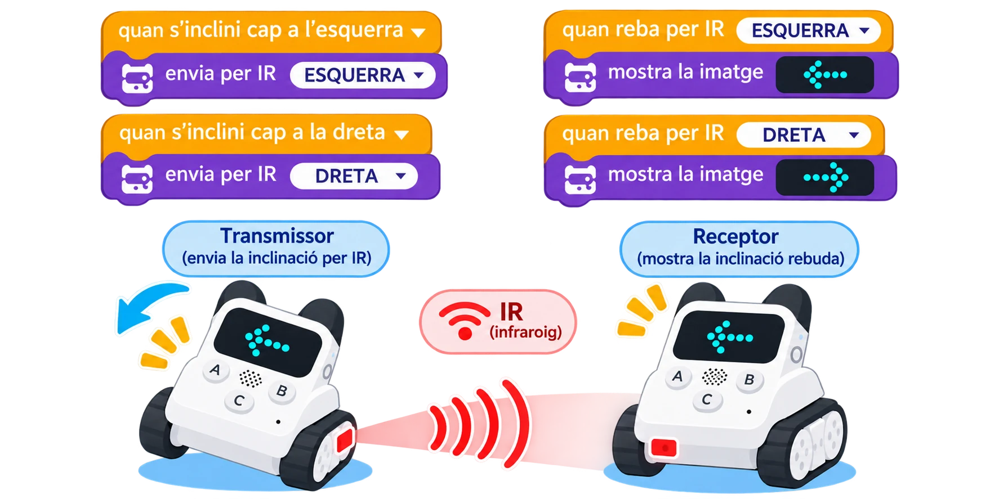

Codey Rocky
El robot amb pantalla LED 16 × 8, sensors i moviment amb orugues

Codey Rocky està format per dues parts desacoblables: 'Codey' (el cervell amb pantalla matriu de 128 LEDs, sensor de llum, micròfon, altaveu i giroscopi) i 'Rocky' (el xassís oruga amb sensors de color i d'infrarojos). Es programa amb blocs tipus Scratch o Python a través del software mBlock5.
Tutorials de Codey Rocky
Tutorials per iniciar-se en les possibilitats del robot, connectar-lo i utilitzar-ne els components.


Primeres passes: Connexió a mBlock 5 i cares a la matriu LED
Connectar Codey al software de l'ordinador o tauleta i programar animacions facials i missatges lliscants.

Codey Rocky: obstacles, color i seguiment de línia
Orientar el sensor infraroig/color, provar una resposta als obstacles i comparar-la amb el seguiment d’una línia.

Veu i IA: funció externa i simulació amb Codey Rocky
Distingir el sensor de so integrat del reconeixement de parla, provar una extensió en línia només si està disponible i simular les ordres amb seguretat.

Codey Rocky: llum, so, RGB i seguiment de línia
Explorar els sensors de llum, so i infraroig/color i combinar-los amb l’indicador RGB i els motors de Rocky.

Codey Rocky: la rodeta, la inclinació i els missatges
Provar la rodeta i la inclinació de Codey i enviar un missatge entre dos robots, si estan disponibles.

Codey Rocky: del programa de blocs a Python en mBlock
Connectar Codey Rocky, carregar un programa de blocs i inspeccionar o editar la traducció Python del mode Upload.

Codey Rocky: expressions, sons i energia
Personalitzar la matriu LED, programar sons i dansa i comprovar el nivell de bateria del robot.
Recursos oficials del fabricant
Materials, compatibilitat i instruccions actualitzades.
- Guies i casos de Codey RockyGuies de configuració, programació amb mBlock i reptes amb sensors.
- Codey Rocky & Neuron DiscoveryCurs amb seqüències, bucles, condicions, sensors i activitats desendollades; algunes parts